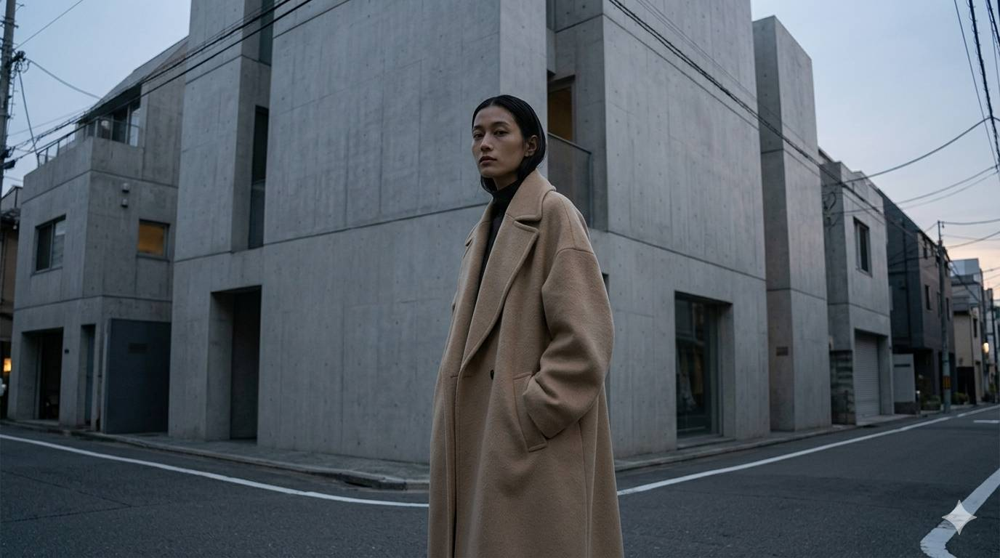
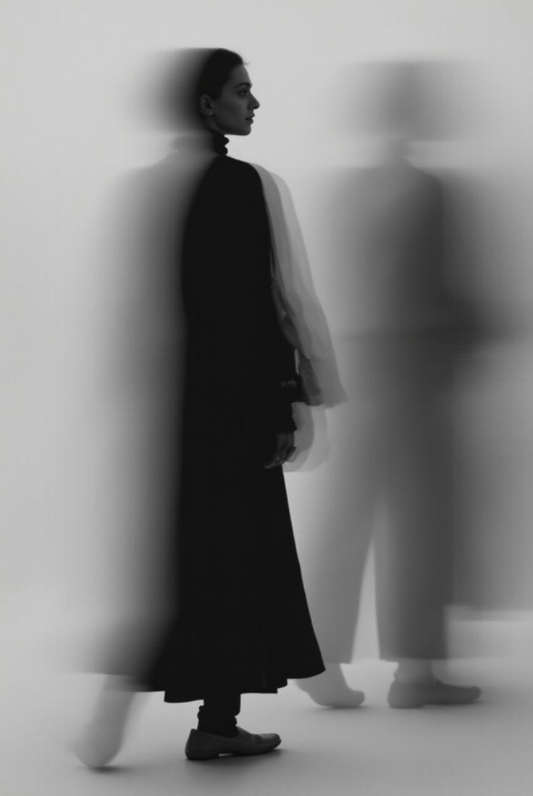
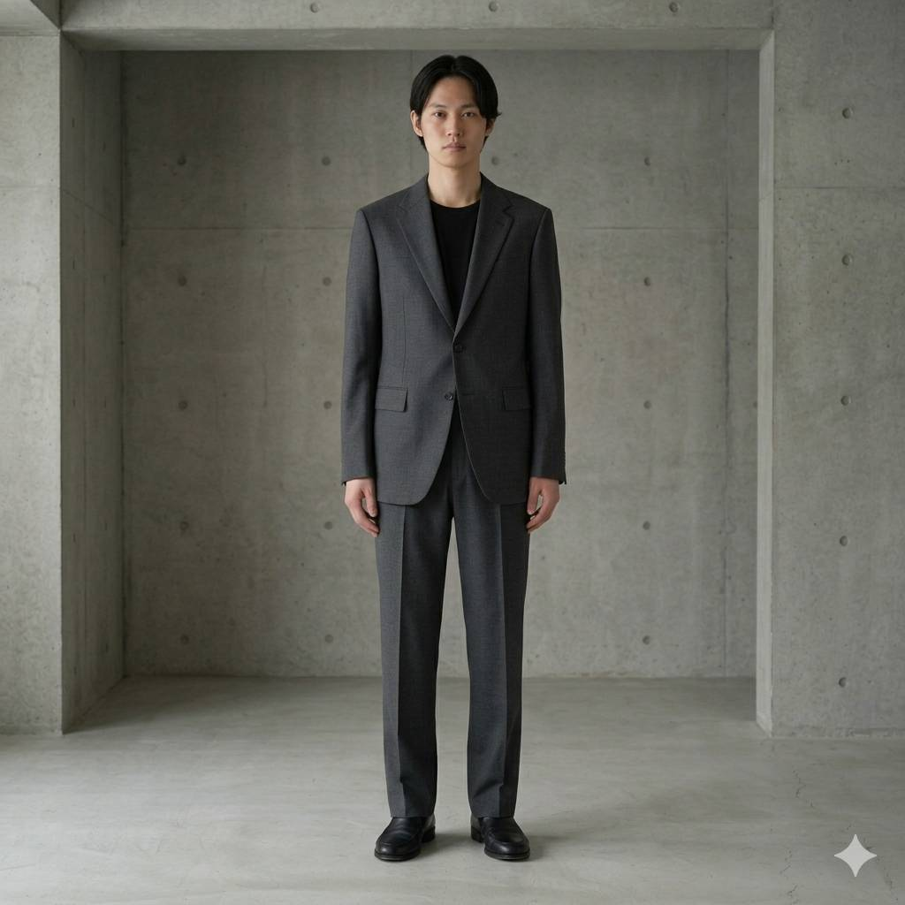
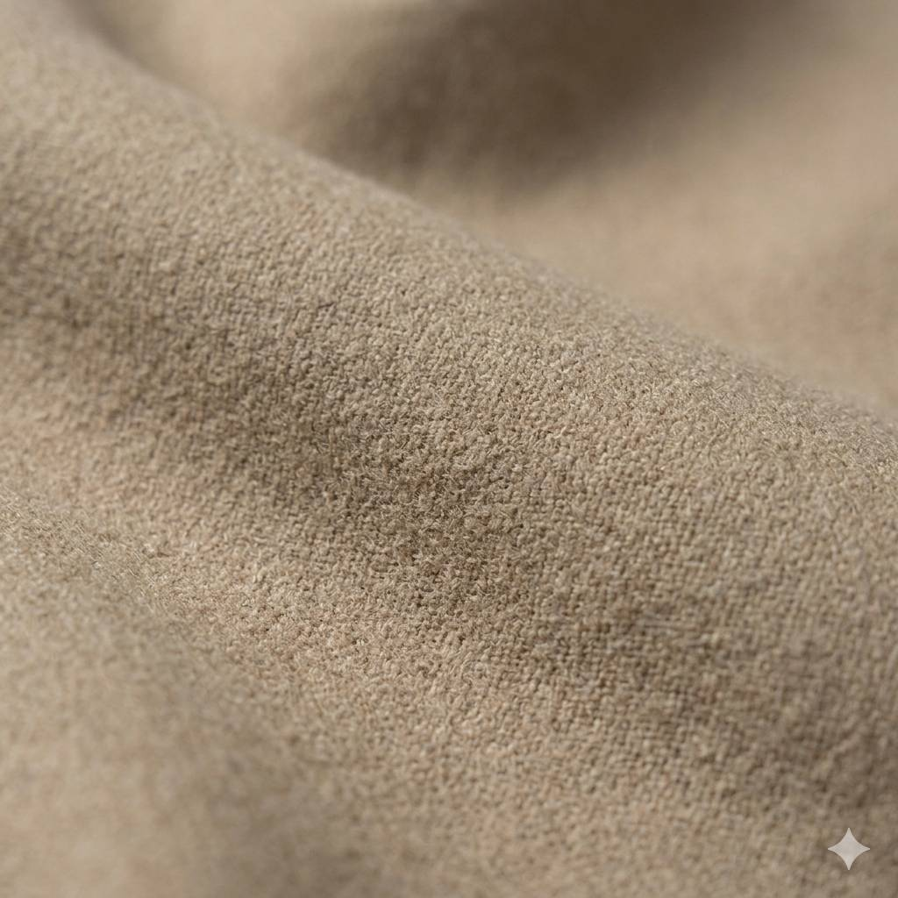
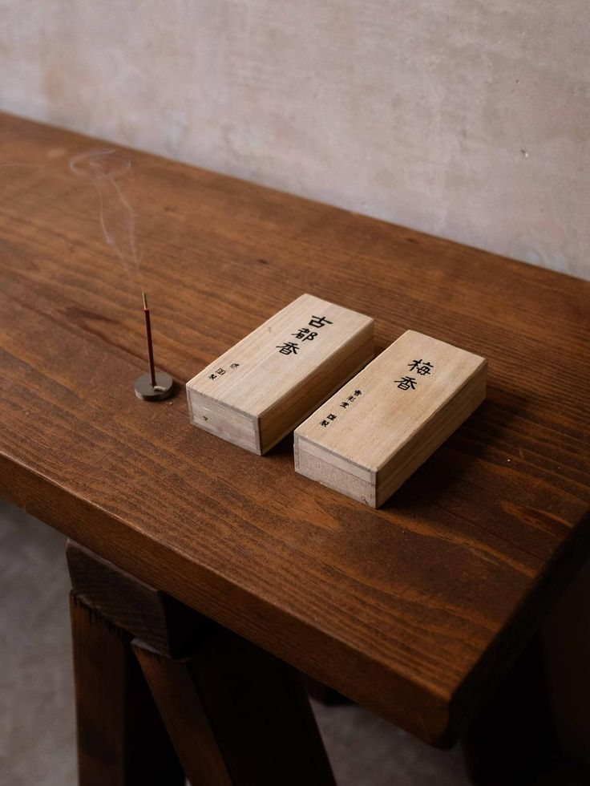
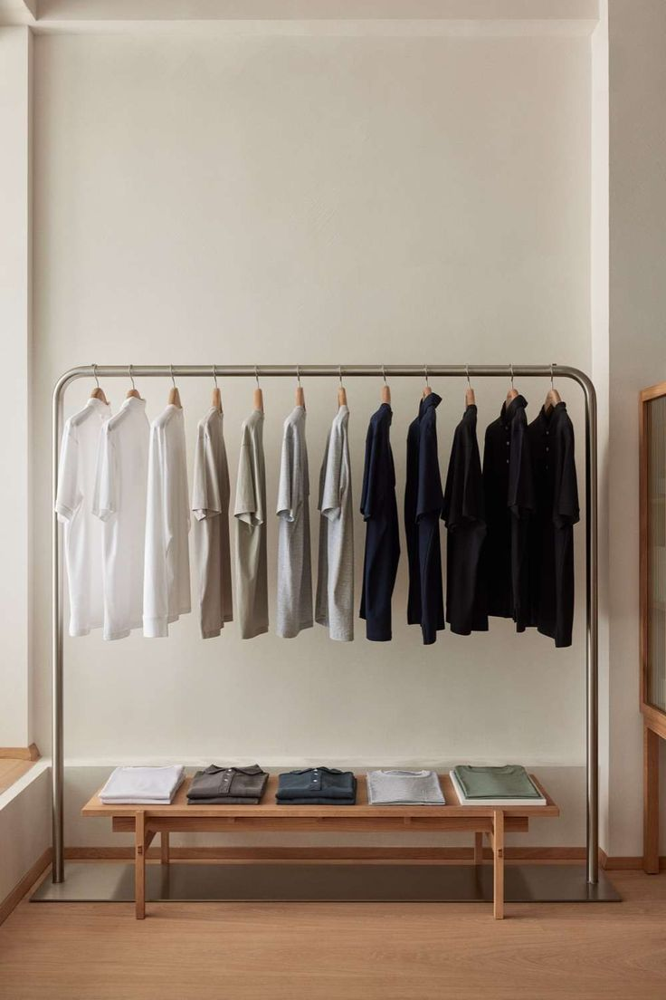
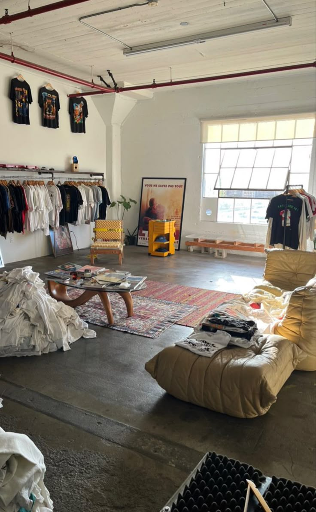
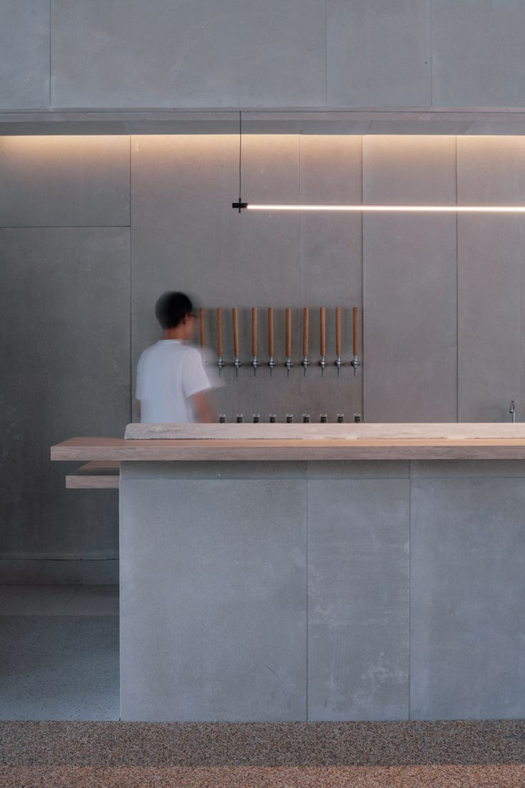

CONCEPT
静かな秩序
Silent Order
이 프로젝트는 단순한 의류가 아닌, 공간 안에서의 균형을 설계하는 큐레이션입니다.
선택은 창작을 대체합니다. 각각의 오브젝트는 하나의 톤을 유지하기 위해 존재합니다.
선택된 오브젝트들이 하나의 공간을 구성합니다.

Curated Objects
Wear / Goods / Space
Spatial Harmony
TOKIMO CURATION

이 프로젝트는 단순한 의류가 아닌, 공간 안에서의 균형을 설계하는 큐레이션입니다.
선택은 창작을 대체합니다. 각각의 오브젝트는 하나의 톤을 유지하기 위해 존재합니다.
tokimo의 큐레이션은 개별 제품이 아닌, 공간 안에서의 조화를 기준으로 선택됩니다.






일상 공간 안에서의 큐레이션.
브랜드, 카페, 오브젝트를 하나의 경험으로 연결합니다.